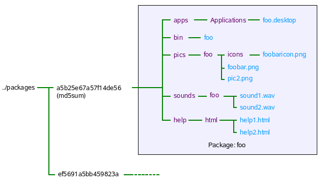

|
Home · All Namespaces · All Classes · Grouped Classes · Modules · Functions | |
Qt Extended uses a custom .qpk format for installable packages. Each .qpk file consists of program files organized in a specific directory structure that has been compressed.
It should be stressed that the qpk installation system was not meant to be a general purpose package installation system like ipkg. Packages installed with the qpk format have a number of limitations:

Typically there are 5 elements make up a package project
The project file describes the contents and configuration of a project. It typically specifies such things as where the source and headers come from, dependencies and the output file name, amongst a host of other options that the build system uses to build an application. Details on these options can be found at Qt Extended Build System Documentation. A project file may be generated using
qbuild -project
A sample project file that can be found in the example application.
A package for an sxe-enabled phone will need a couple of special requirements to the source code and the project file.
The .desktop file is used to create an entry in the launcher for the application. The icon and user-visible name of the program is specified here. Note the Exec field of the .desktop file is assumed to refer to a binary in the bin directory of the package.
The structure of the package's directories in the final qpk file is generally automatically handled by the build system. There are various install hints that tell the build system what to do. Other sections of this documentation details how to make use of these install hints to make use of various resources and help files.
The tutorial for creating a new application may be used as quickstart example for building a package. The steps are exactly the same except that qbuild packages should be used instead of qbuild image. After the qbuild packages step no further steps are required the qpk file will have been generated in a pkg subdirectory.
To make a package available for download and installation follow these steps:
Note: For a default apache2 installation, content will be served from /srv/www/htdocs.
You will likely need root privileges to create the feed directory and set the desired ownership. For example:
sudo mkdir -p /srv/www/htdocs/feed
sudo chown user.group /srv/www/htdocs/feed
where user and group are the user name and group name of the user who will publish packages.
sudo $QTOPIA_DEPOT_PATH/bin/mkPackages /srv/www/htdocs/feed
From the current directory, this will recursively search for any packages and copy them into the feed directory /srv/www/htdocs/feed. A packages.list file will be created in the feed directory, listing all the packages found in it.
If the feed directory is not supplied, the current directory is considered the feed directory and no recursive searching occurs. In this particular case one would do the following:
sudo cp myappp.qpk /srv/www/htdocs/feed
cd /srv/www/htdocs/feed
sudo $QTOPIA_DEPOT_PATH/bin/mkPackages
[My packages]
URL=http://10.10.10.21/feed
To take advantage of the resource system, resources such as images and sounds should be installed into specific directories.
To register images, the pics install hint should be used in the project file. Be aware that the install task .path must be /pics/<appname> where <appname> refers to the application executable filename. Icons and images which depend on the language need to be placed in particular directories as outlined in the installpic Algorithm.
Assuming that there is a image called foobar.png and an icon called foobaricon.png, then the following code can be used to access those resources:
QPixmap myPic(":image/foobar");
QIcon myIcon(":icon/foobaricon");
The icon that associated with the application needs to be specified in a .desktop file. The Icon field should look something like:
[DesktopEntry]
...
Icon=<appname>/iconfile
...
To register sounds an install task should be specified like so:
foo.hint=image
foo.files=sounds/*
foo.path=/sounds/<appname>
Assuming that there is a sound called foobar.wav, then the following code can be used to access that sound:
QSound mySound(":sound/foobar");
To provide help information to users, the help install hint should be used. Bear in mind that the help files are placed in <helproot>/html or <helproot>/<lang>/html and not directly in the <helproot> directory.
At least one help file should be provided called <appname>.html where <appname> is the application binary name. This is the first help file that is presented to the user when the help option in the soft menu is invoked. Any other help files should be of the form <appname>-suffix.html eg. myapplication-howto.html.
As a side note, you may use QSoftMenuBar::menuFor() to generate a context menu which has a help option.
By default packages will be set to be internationalized to the same languages that Qt Extended has been configured for. To modify which languages are targeted, the AVAILABLE_LANGUAGES and LANGUAGES variables in the qbuild.pro file can be modified to something similar to below:
# Specify the languages that make lupdate should produce .ts files for
STRING_LANGUAGE=en_US
LANGUAGES=en_US de
To generate an initial set of .ts files, in the package source directory run
qbuild lupdate
The .ts files can then be used in conjunction with linguist to generate the translations. Running qbuild packages, will create a qpk file with the .qm files appropriately placed in the qpk's package directory structure.
See Also Internationalization
Any settings files used by the package should not correspond with any organizations listed under the RestrictedOrganizations parameter in the PackageManager.conf file. On an SXE configured Qt Extended, packages won't have write access to these settings files and so should use other organizations to avoid any problems. For similar reasons, packages should use QSettings objects at user scope.
Creating a settings file using QSettings will automatically (on both SXE and non-SXE enabled devices) place the settings files in the package sandbox directory.
Pre-generated settings files that should be placed in the Settings directory in a similar manner to that shown below:
foo.hint=image
foo.files=mysettings/*
foo.path=/Settings/
where the configuration files have been positioned as follows:
| organization | application | location |
|---|---|---|
| foo | bar | mysettings/foo/bar.conf |
| foo | none | mysettings/foo.conf |
A package that contains a settings file whose organization is in the RestrictedOrganizations list will not be installable.
If there are issues that occur during package installation, the Package Manager/Software Installer will show up a simple dialog mentioning that the package could not be installed but provide very little detail. Details of why the package did not install are presented in the Qt Extended log/console output.
For extra information, turn on Package Management logging either via the Settings->Logging application or by editing the Log.conf file and then restart Qt Extended. The log output will provide more detailed information on what is happening during package installation.
The logging out put can be viewed in a number of ways
Q: My packages are in the feed directory but why I can't see them with Software Packages?
A: Ensure that you have re-generated the packages.list file with mkPackages. Also ensure that the package is compatible with the version of Qt Extended on the device and the device itself, otherwise they will not be visible and cannot be installed. Turning on Package Management logging will give more details.
Q: I have a package from Qt Extended version x but i want to use it on Qt Extended version y but I can't because x and y are not binary compatible.
A: If you want to try a package that is not compatible with the version of Qt Extended on the device you can use the modqpk script to modify the package's QtopiaVersion field. QtopiaVersion consists of a comma delimited list of versions which can include ranges eg, 4.1,4.2.0-4.2.4. Generally, it is not recommended that this be done.
Q: I've made a qpk package for the desktop and am running Qt Extended with qvfb and it works fine, but when I try the same qpk on another desktop machine, the package doesn't run.
A: The runtime library path is hardcoded into the package executable at compile time. On a device this isn't a problem since all the devices will have the same file system structure. For the desktop, the situation is different since on one machine the path may be /home/bob/QtExtended/lib while on another it's /home/bert/QtExtended/lib; a workaround may be to modify the LD_LIBRARY_PATH or just recompile the package for the other machine.
Q: I made a package called Bloxx and have installed it on my device. Someone else has also made a package co-incidentally called Bloxx, when I try to download their package from their server the package manager says it's already installed.
A: Two packages of the same name cannot be installed at the same time; if two packages have the same name and same icon, the user cannot distinguish between them in the application launcher. Packages that share the same md5sum are also considered to be the same package.
Q: I have a desktop file that refers to a binary which is in the package's etc directory. The package does not install because it says the desktop file does not reference a binary.
A: All desktop files can only reference binaries that get placed in the package's bin directory. Also the desktop file must actually reference a binary and not a symlink in the bin directory. Be aware that the bin directory itself must not be a symlink. If these conditions are not met, installation of the package will be prevented. Most of the time the build system automatically handles placement of executables in the bin directory, the developer usually does not have to concern him/herself with this.
| Copyright © 2009 Trolltech | Trademarks | Qt Extended 4.4.3 |